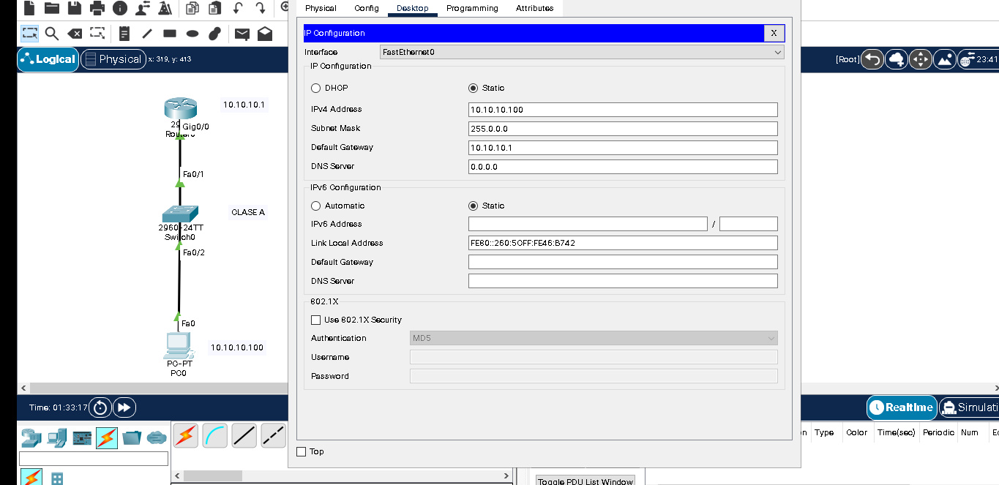
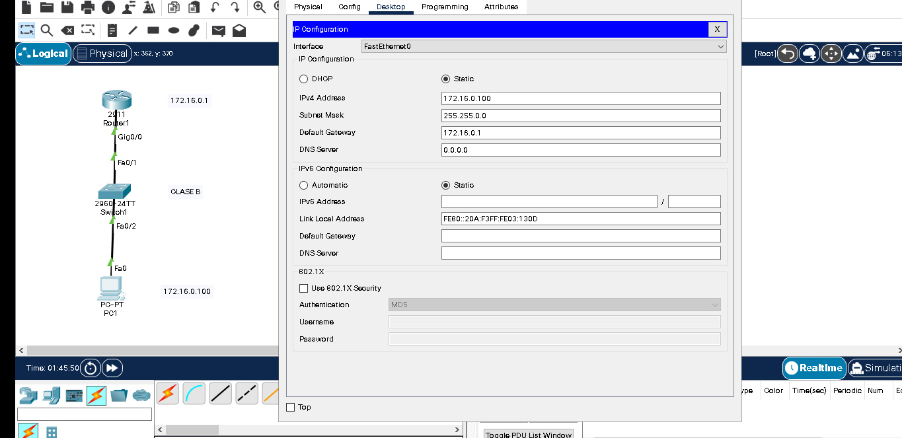
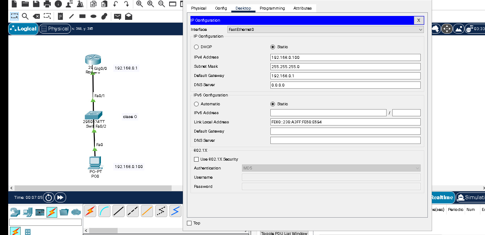

<link rel="stylesheet" href="ipv4css/ipv4.scss">
<link rel="stylesheet" href="ipv4css/ipv4css">
<nav>
    <em>Hacker &rAarr; </em>
 
    <div class="theme-switch-wrapper">
         <label class="theme-switch" for="checkbox">
      <input type="checkbox" id="checkbox" />
      <div class="slider round"></div>
    </label>
    </div>
  
  </nav>  
  <section>
      <article class="post">
        <h1>Direcciones IPV4</h1>
      <h3>
        ¿Qué es IPv4? :<br><br> 
        IPv4 (Protocolo de Internet versión 4 o en inglés: Internet Protocol version 4), es un protocolo de redes basados en Internet. Utiliza direcciones de 32 bits, siendo el total de direcciones posibles de 4 294 967 296
        <br><br>
        Clases de redes IPv4 – Direccionamiento IP <br><br>        
        Dado que una dirección IPv4 tiene 32 bits y la representación decimal se divide en cuatro octetos, si decimos que una IP tiene una máscara /8 (Clase A) quiere decir que sus primeros 8 octetos -de izquierda a derecha- pertenecen a la red y los demás octetos pertenecen al host. <br><br>
        De igual manera para las máscaras /16 que utiliza la Clase B y /24 que utiliza la Clase C. 
        
        Rango de Direcciones IP disponibles por Clases de Red A, B, C, D, E <br><br>
        -------------------------------------------------------------------- <br><br>

        Clase A: 0.0.0.0 a 127.255.255.255  – Máscara /8 <br><br>
        
        Reservado 0.0.0.0/8 (de 0.0.0.0 a 0.255.255.255)
        Reservado 127.0.0.0/8 (de 127.0.0.0 a 127.255.255.255) <br>

        <br> 

         <br><br>

        -------------------------------------------------------------------- <br><br>

        <br><br>
        Clase B: 128.0.0.0 a 191.255.255.255 – Máscara /16

        <br> <br>

         <br><br>
        <br><br>
        -------------------------------------------------------------------- <br><br>

        Clase C: 192.0.0.0 a 223.255.255.255 – Máscara /24
        <br><br>
         <br><br>
        
        -------------------------------------------------------------------- <br><br>

        Clase D: 224.0.0.0 a 239.255.255.255 (Clase reservada para Múlticas)
        <br><br>
        -------------------------------------------------------------------- <br><br>

        Clase E: 240.0.0.0 a 255.255.255.255 (Clase reservada)
        <br><br>
        -------------------------------------------------------------------- <br><br>

        Clase	Rango válido del Primer Octeto	Redes válidas
        A	1 a 126	1.0.0.0 a 126.0.0.0
        B	128 a 191	128.0.0.0 a 191.255.0.0
        C	192 a 223	192.0.0.0 a 223.255.255.0
        <br>

        -------------------------------------------------------------------- <br><br>

        Clase	Rango válido del Primer Octeto	Redes válidas <br><br>
    A	1 a 126	1.0.0.0 a 126.0.0.0 <br><br>
    B	128 a 191	128.0.0.0 a 191.255.0.0 <br><br>
    C	192 a 223	192.0.0.0 a 223.255.255.0 <br><br>
        -------------------------------------------------------------------- <br><br>

        
    </h3>
        <a href="#">Read More</a>
    </article>
  </section>

<script>
    const toggleSwitch = document.querySelector('.theme-switch input[type="checkbox"]');
const currentTheme = localStorage.getItem('theme');

if (currentTheme) {
    document.documentElement.setAttribute('data-theme', currentTheme);
  
    if (currentTheme === 'dark') {
        toggleSwitch.checked = true;
    }
}

function switchTheme(e) {
    if (e.target.checked) {
        document.documentElement.setAttribute('data-theme', 'dark');
        localStorage.setItem('theme', 'dark');
    }
    else {        document.documentElement.setAttribute('data-theme', 'light');
          localStorage.setItem('theme', 'light');
    }    
}

toggleSwitch.addEventListener('change', switchTheme, false);


</script>